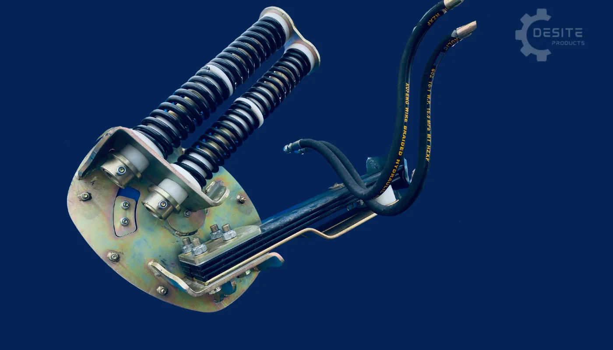
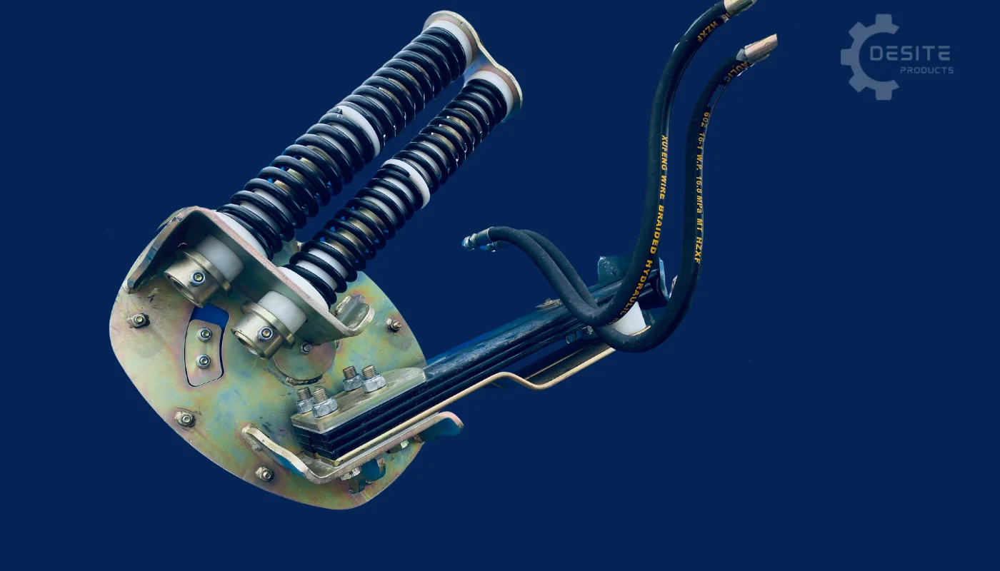

Proscreen SLG-108VFRB
The 108 Pro Screen is our largest screener model, specifically designed for use with full-size equipment. With an impressive hourly production capacity of 30 to 60 yards per hour, this screener is built to handle large-scale operations with ease. It is compatible with buckets ranging from 84 to 108 inches (2.1m to 2.7m), providing flexibility for various equipment sizes. Additionally, the SLG 108VFRB offers over 10 different mesh options, allowing you to efficiently process a wide range of materials to meet your specific needs.


See It In Action
Watch videos demonstrating the SLG-108VFRB in operation
SLG-108VFRB Demonstration
Check out more videos at www.youtube.com/c/Idmcabc_inc
Product Description
The SLG-108VFRB comes standard with Feed Deflector and has the ability to screen up to 46m³ an hour depending on mesh and moisture.
Twin 240 volt vibration units give exceptional recovery rates for soil and gravel screening. The SLG-108VRB Screen can be fitted with woven mesh from 3mm up to 150mm – various wire sizes are available.
Key Features:
- Screen sand, soil, rock, compost, wood debris, landscape and construction debris and more
- Weighs 2268kg standard or 2608kg with riser box. Move it easily around the worksite using pallet forks inserted into the screeners lift pockets
- Can be fed with buckets up to 2.8 metres
- Can be fitted with mesh from 13mm to 25mm elongated mesh and 32mm to 100mm square mesh
- Dual Centre & Side tensioned mesh that changes in minutes
- You can manipulate the screen deck slope during the screening process for maximum screening efficiency
- No maintenance (no oil, grease or engine to maintain)
- Comes with Dual Vibratory Electric motors
- Comes with Riser box for backhoes and loaders. Take it off the riser box & use with skidsteers and compact equipment
- Designed to be fed by Wheel Loaders, Backhoes, Compact Wheel Loaders, Skidsteers, Excavators, and Compact Excavators
- Twin spring system allows screen deck to pivot from rear edge over 300mm of deck travel
- Tap with bucket to shake off stuck material
- Heavy duty construction built to last
Check out the actual performance of this and other models at www.youtube.com/c/Idmcabc_inc
Bucket Size Compatibility
Maximum Bucket Width: 2.8 metres
Compatible Equipment: Wheel Loaders, Backhoes, Compact Wheel Loaders, Skidsteers, Excavators, Compact Excavators
Specifications
Machine Dimensions
- Screen Box Width: 3.1m
- Screen Box Height: 3.2m
- Screen Box Depth: 1.9m
Riser Box
- Riser Box Width: 3.1m
- Riser Box Height: 0.7m
- Riser Box Depth: 1.9m
- Riser Box Weight: 340kg
Weight
- Total Weight – Off Riser: 2268 kg
- Total Weight – On Riser: 2608 kg
Screen Deck
- Screen Deck Width: 2.8m
- Screen Deck Length: 1.8m
- Screen Deck Surface Area: 5.1m²
- Screen Deck Tilt Angle: 45 to 30 degrees
Productivity
- Production Rate: 30 to 60 yards per hour (23 – 46m³/hour)
Mesh
- Supplied with: 20 x 100mm elongated mesh
- Available Mesh Sizes:
- Square Pattern: 6mm, 10mm, 18mm, 30mm, 50mm, 100mm
- Elongated Soil Mesh: 6mm x 100mm, 10mm x 100mm
- Optional mesh sizes upon request
- Change the end tensioned mesh in 10 minutes
Vibratory System
- Type: Dual Eccentric Vibratory Packs
- Rotation Speed: 3600 RPM per motor
- Force per Motor: Approximately 760 lbs of force
- Amperage Draw: 5 Amps per motor at operating speed
- Voltage: 230v 50 Hz (New Zealand)
- Generator Required: Less than 2000 watts
- Feed Deflector: Included as standard
Assembly
- The SLG-108 comes assembled
Screener Features
Feed Deflector System


Only DeSite recognized the need for a Feed Deflection System to optimize material flow. DeSite SLG screeners are uniquely equipped with a deflector that funnels material towards the top of the screen deck, initiating the screening process efficiently.
By directing material flow to the top of the screen deck, this system ensures maximum production and efficiency. The 108 Pro Screen's deflector is designed with flexibility in mind, allowing it to open and close as needed to manage oversized materials effectively. Additionally, the 108's feed deflector fits into our quick disconnect lugs, making it easy to remove when necessary.
- Optimized Material Flow: Directs material towards the top of the screen deck, ensuring efficient and effective screening.
- Maximized Production: Enhances production capacity by starting the screening process at the optimal point on the deck.
- Flexible Operation: The deflector can open and close as needed, allowing for easy handling of oversized materials.
- Quick Disconnect Capability: Easily removable thanks to the quick disconnect lugs, providing flexibility in operation and maintenance.
- Enhanced Efficiency: Streamlines the screening process, reducing downtime and improving overall operational efficiency.
Tilting Screen Deck
The ability to adjust the screen deck slope while screening is a key factor in increasing efficiency and boosting hourly production. The 108 Pro Screen offers adjustable positions to accommodate different materials and moisture levels, ensuring optimal performance in all soil conditions—whether wet, dry, sandy, rocky, or even frozen.
To slow down material flow, the operator simply needs to flatten the deck slope using the bucket while feeding the screener. For high moisture materials, keeping the screener at a steeper slope allows material to travel faster across the deck. This high-efficiency feature is unique to DeSite screening machines, setting them apart in the industry.
- Enhanced Efficiency: Adjusting the screen deck slope improves screening efficiency, resulting in higher hourly production.
- Versatile Performance: The 108 Pro Screen adapts to various materials and moisture levels, ensuring consistent performance in all soil conditions, including wet, dry, sandy, rocky, and frozen soils.
- Controlled Material Flow: Operators can easily control material flow by adjusting the deck slope, slowing it down for better screening of certain materials.
- Optimized for High Moisture: A steeper slope allows for faster material travel, making it ideal for screening high moisture materials.
- Unique to DeSite: This high-efficiency feature is exclusive to DeSite screening machines, offering a distinct advantage in the market.
Cantilevered Spring Suspension System
 

The Cantilevered Spring Suspension System is designed to be virtually maintenance-free, requiring attention to just two grease points per shift. This advanced system utilizes leaf springs, Z springs, and UHMW bushings to keep the suspension tubes and coils separate, eliminating the need for lubrication. With less time spent on maintenance, you can focus more on screening, leading to increased production and profitability.
This innovative suspension system allows operators to adjust the deck slope to perfectly match the material being screened. The cantilevered design ensures that when pressure is applied to the top of the screen deck, the bottom moves in the opposite direction, enhancing the screening process. The system's simple yet durable construction provides flexibility and reliability in operation.
- Minimal Maintenance: Requires servicing of only two grease points per shift, reducing downtime and increasing productivity.
- No Lubrication Needed: Utilizes leaf springs, Z springs, and UHMW bushings to separate suspension components, eliminating the need for lubrication.
- Increased Production: Less time spent on maintenance means more time available for screening, boosting overall production and profitability.
- Adjustable Deck Slope: Operators have the flexibility to adjust the deck slope to match the material being screened, optimizing the screening process.
- Efficient Cantilevered Design: The system's cantilevered structure ensures that when the top of the screen deck is pushed down, the bottom moves in the opposite direction, enhancing screening efficiency.
- Durable Construction: Built for reliability and long-term use, offering a simple yet robust solution for various screening needs.
Vibratory Packs & Power Box
The 108 Pro Screen is equipped with dual eccentric vibratory packs, each motor operating at 3600 RPM and generating approximately 760 lbs of force. This powerful setup ensures efficient material screening. The starter box includes two capacitors that store energy to facilitate smooth motor startup, while at operating speed, each vibratory pack only draws about 5 amps, making the system energy-efficient.
Our DeSite eccentric vibratory packs are designed for durability, featuring oil ring seals that keep dust and moisture out, ensuring long-lasting performance. Additionally, the electric components are encased in rubber to absorb vibrations from the eccentrics, protecting the system and enhancing reliability.
- Powerful Performance: Each vibratory pack operates at 3600 RPM, generating about 760 lbs of force, ensuring efficient material screening.
- Energy-Efficient: At operating speed, each vibratory pack only draws about 5 amps, making the system energy-efficient and cost-effective.
- Smooth Startup: The starter box includes two capacitors that store energy to facilitate smooth motor startup.
- Durable Design: Oil ring seals keep dust and moisture out, ensuring long-lasting performance.
- Vibration Protection: Electric components are encased in rubber to absorb vibrations from the eccentrics, protecting the system and enhancing reliability.
Pricing (Estimates)
⚠️ All prices are ESTIMATES only and subject to change. Prices converted from AUD to NZD (minimum 15% adjustment for exchange rate and local costs).
SLG-108 VFRB. Vibrators, riser box, feed deflector, rubber mat. Assembled price ex Nelson. Price does not include shipping or delivery. Delivery will be arranged with the purchaser and additional charges may apply depending on location.
Additional Options (Estimates):
- SLG-108VFRB Spare Screens (ordered with the machine): Approx. $1,520 + GST (NZD)
- Bucket Lift Extensions: Approx. $980 + GST (NZD)
Please contact us for current pricing and delivery options to your location.
What Can You Screen?
Soil & Organic Materials
- ✓ Sand
- ✓ Topsoil
- ✓ Compost
- ✓ Wood Mulch
Stone & Aggregate
- ✓ Pea Stone
- ✓ Septic Rock
- ✓ Road Gravel
- ✓ Landscape Stone
Recycled Materials
- ✓ Ground Asphalt
- ✓ Crushed Concrete
- ✓ Erosion Control Rock
- ✓ Traction Sand